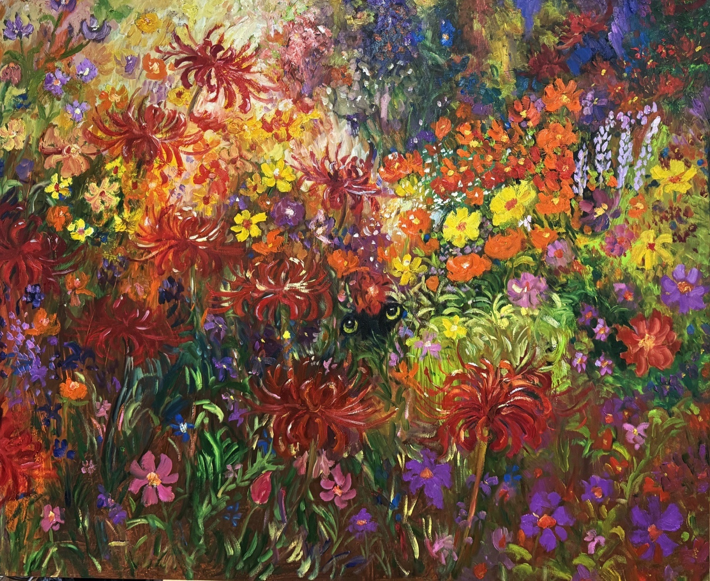

This Shore, the Other Shore
此岸·彼岸

- Artwork ID / 作品编号
- KW-O-000013
- Year / 年份
- 2025
- Medium / 媒介
- Oil on canvas / 布面油画
- Dimensions / 尺寸
- 90 × 110 cm (H × W / 高 × 宽)
A pair of eyes looks out from the profusion of flowers. The red spider lily, known in Chinese as the flower of the other shore, brings the tangible world and an unseen one into the same field of vision.
在这片浓烈而繁盛的花丛之中，隐藏着一双注视的眼睛。它不是惊扰，也不是窥视，而是一种来自生命深处的觉知——仿佛世界的秘密就藏在这层繁花的褶皱之间。